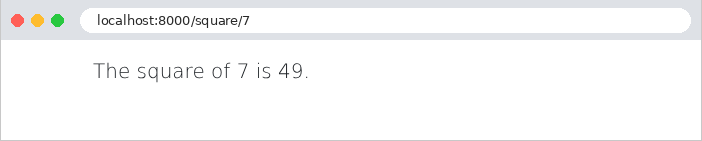
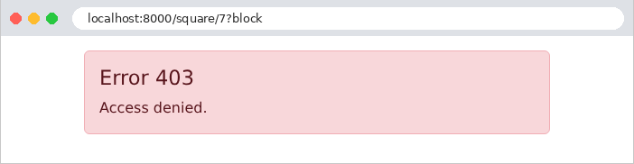
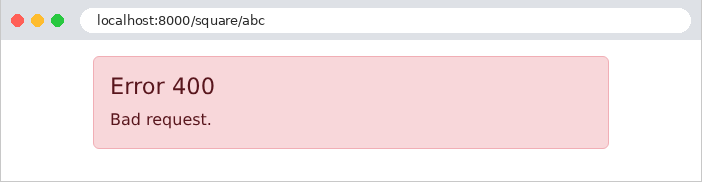
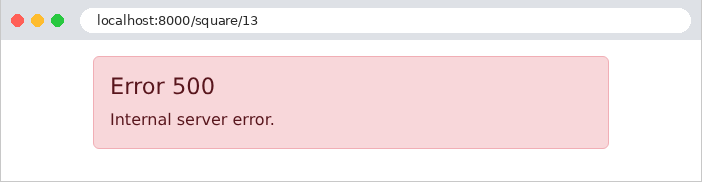

7. The Lifecycle of a Request
Between the arrival of a request and the dispatch of its response, the [Symfony] kernel (the [HttpKernel] class) performs several steps, and at each step, it publishes an event to which the application can respond via a listener. We have already encountered several of these: the listeners for [kernel.request] and [kernel.response] (examples 03, 16, 22), for [kernel.exception] (examples 08 and 12), and the argument resolvers (example 12). This chapter brings them all together in a single example, which displays a message in the console at each step so you can observe the order:
- 1 and 2. [kernel.request]: the request has just arrived. All listeners for this event are called, in descending order of priority. One of them is the routing listener for [Symfony] (the [RouterListener] listener, with priority 32): it searches for the route that matches URL and the method, and stores its name and parameters in the request attributes; if none match, it throws a [NotFoundHttpException] (404) exception. A listener with a priority higher than 32 (1) runs before routing and does not know the route; a listener with a lower priority (2) does know it. A [kernel.request] listener can also provide the response ([$evenement->setResponse(...)]) itself: in this case, the action is not called;
- 3. [kernel.controller]: the action has been selected but not yet invoked. A listener can examine the action (its attributes, such as [PHP], for example) or replace it;
- 4. The argument resolvers calculate the action’s parameters (Example 12), and then the event [kernel.controller_arguments] is published;
- 5. The action and the view it generates. (If the action does not return a [Response] object, an additional event, [kernel.view], allows a listener to construct the response based on what the action returned.);
- 6 and 7. [kernel.response]: the response is ready. Each listener can modify it (add a header, a cookie), in descending order of priority;
- 8. [kernel.terminate], published after the response is sent to the browser (this is the [$noyau->terminate(...)] call from the [public/index.php] file, example 01). Listeners can no longer change the response: they are used for tasks that can wait (writing a log, sending an email, etc.), without making the user wait;
- x. [kernel.exception]: An exception thrown at any stage (by a listener, a resolver, the action, or the view) interrupts processing; it is handled by the listeners for that event. The first listener to provide a response stops the search. This response then passes through [kernel.response], just like a regular response. If no listener in the application provides one, [Symfony] generates the error page: detailed in debug mode, otherwise minimal.
This is equivalent to the filters in [Java] and the interceptors in [Spring MVC], the action filters in [ASP.NET Core MVC], the functions in [before_request] / [after_request] and [Flask], and the middleware of [Laravel]. The difference between them lies in their structure: a middleware component wraps the rest of the processing (it calls [$next], and thus sees the request before and the response after, within the same code), whereas a listener reacts to an event; to act before and after the action, you must listen for two events. On the other hand, a listener can intervene at a specific stage (after routing, after the action is selected, etc.), and the order of the listeners is determined by a number—the priority.
7.1. Example 24: The stages of request processing
The application has only one action, which calculates the square of an integer: [/carre/7]. Depending on URL, it either succeeds or fails in various ways. Messages are written to the server console by the [error_log] function in [PHP], which the development server ([php -S]) displays.
7.1.1. Before and after everything else: src/EventListener/Journal.php
A single class can listen for multiple events: the [#[AsEventListener]] attribute is then applied to each of the relevant methods.
- lines 16–23: message #1, with the request ([getRequestUri()]: the path and parameters). Priority 100 places the listener before routing: nothing has happened yet in [Symfony];
- Lines 26–30: Message No. 7, once everything else has been completed. A priority of -100 places the listener after those of the application and [Symfony] (most of which have a priority between -10 and 10). [getStatusCode()] is the response code.
Such a listener does not know the chosen route, since routing has not yet taken place. It is used for processing that applies to all requests: logging, handling a proxy (the case study mentions this in relation to the clients’ IP address)...
7.1.2. After routing: src/EventListener/Bloquer.php
- line 13: the default priority, 0: the listener is called after routing;
- line 20: message #2. Routing has stored the name of the selected route in the [_route] attribute of the request (and its parameters in the attributes of the same name, example 12);
- Lines 21–24: The [?bloquer] parameter of URL ([has] checks for its presence) causes a 403 error (Forbidden, access denied): the [AccessDeniedHttpException] exception terminates processing.
7.1.3. Before the action: src/EventListener/Chronometre.php and Chrono.php
We want to time only certain actions—those that require it. All we need to do is mark them with a custom attribute, [PHP]:
An attribute is an ordinary class, itself marked with the attribute [#[Attribute]]; [Attribute::TARGET_METHOD] indicates that it is applied to a method. This attribute carries no information: its mere presence is what matters.
- Lines 17–28: the [kernel.controller] event. The event’s [getAttributes] method returns the [PHP] attributes of a given class carried by the action (and by its class): an empty list means the action is not marked, and the listener does nothing. Otherwise, message #3, and the start time, stored in the request attributes (example 12). [hrtime(true)] is a precise clock, in nanoseconds, designed to measure durations;
- lines 30–36: message #6, regarding [kernel.response], with the response code, if the measurement has started. The default priority, 0, places this listener before that of [Journal] (-100);
- lines 40–49: the [kernel.terminate] event, published after the response is sent: message #8, containing the elapsed time since message #3. The check on line 45 verifies that the measurement has started: the event is published for all requests, even those that did not reach the action.
This is how [Symfony] itself implements some of its attributes: [#[IsGranted]], which we will discuss in the next chapter, is read by a listener of [kernel.controller_arguments], which denies access to the action if the user does not have the requested permission.
7.1.4. The action’s arguments: src/Liaison/EntierResolver.php and the controller
An argument resolver (Example 12), which writes message #4. It accepts any text and converts it to an integer, or to [null] if it is not one ([filter_var] returns [false]): unlike a constraint such as [requirements] (Example 02), which would return a 404 page for [/carre/abc]; here, the action will determine the outcome.
- line 20: the action is marked with our attribute [#[Chronometre]];
- line 21: the parameter [$n] is provided by our resolver (attribute [#[ValueResolver]], example 12);
- lines 24–26: a parameter that is not an integer: error 400 (Bad Request), caused by the exception [BadRequestHttpException];
- lines 27–29: the number 13 causes an “unexpected” error. [DomainException] is an exception class from the standard library of [PHP];
- line 30: the normal case. The [calcul/resultat.html.twig] view simply displays the result.
7.1.5. Error handling: src/EventListener/PageErreur.php
- lines 15–17: the listener for [kernel.exception], with priority -10. [Symfony] registers two listeners for this event: the first, with priority 0, logs the exception; the second, with priority -128, generates the error page from [Symfony]. Ours falls between the two: the exception is logged, then we display the page;
- line 21: the listener is not a controller and does not have the [render] method from [AbstractController]: it receives the [Twig] engine itself (the [Twig\Environment] class), whose [render] method returns the rendered page as a string;
- lines 28–32: all HTTP errors: a URL with no route (404), a method denied (405), and the exceptions [AccessDeniedHttpException] (403) and [BadRequestHttpException] (400)... implement the [HttpExceptionInterface] interface and carry their code ([getStatusCode()]). This single test therefore replaces all [Symfony] error pages with ours;
- lines 33–36: an exception of class [DomainException] (or its subclasses; see Example 08): an “unexpected” error, converted into a “custom” error page, with status code 500 (Internal Server Error). The exception message is displayed in the console, but not on the page: it may contain internal details that are not relevant to the user;
- lines 37–39: the other exceptions are handled by [Symfony];
- lines 42–43: [setResponse] provides the response, which replaces the exception and stops the event from propagating: subsequent listeners (the error page for [Symfony]) are not called.
The error page receives the error code and displays an appropriate message:
- Line 8: an associative array defined in the view ([{clé: valeur, ...}]), from which the element with index [code] is retrieved; the operator [??] provides a default value when this element does not exist.
There is another, even simpler way to replace error pages without writing a listener: a view named [templates/bundles/TwigBundle/Exception/error404.html.twig] replaces the 404 error page, and similarly for each code ([error.html.twig] for all others). These views are only used in production; debug mode retains its detailed pages (you can preview them in debug mode at [/_error/404], provided you have imported the routes [@FrameworkBundle/Resources/config/routing/errors.php]). A listener, on the other hand, allows for any type of handling (a response at JSON, a redirect, etc.) in all modes.
7.1.6. Execution
Normal case, [/carre/7]:

The server console displays the eight steps in order (the dates that [php -S] places at the beginning of the lines have been removed):
The line [[info]] comes from the routing of [Symfony]: this is its log (log). Without a logging library (the most commonly used is [Monolog], installed by [composer require logger]), [Symfony] uses a minimal log, which writes to the console. The last line is the development server log, written once the request is complete. A blocked access, [/carre/7?bloquer]:

The listener [Bloquer] raised an exception: the action was not selected, its arguments were not calculated, and it was not called. The exception was logged by [Symfony], then converted into a response by our listener; this response passed through [kernel.response]. The event [kernel.terminate] was published, but [Chrono] did not display anything, as the measurement had not started. A parameter that is not an integer, [/carre/abc]:

This time, the action was called with [null] (which is rendered as an empty string: [carre()]), and it was this action that raised error 400. An “unexpected” error, [/carre/13]:

The exception was handled by our listener: the user sees the “custom” error page, not the detailed page, even though debug mode is active. It was still logged, with the level [critical] (an error HTTP is simply a [error]): Like [Laravel], [Symfony] distinguishes between logging an exception in the log and the response it generates. Finally, a URL that does not correspond to any route, [/inconnu]:
Routing failed: no listener after it, no action. The 404 page is ours:
Let’s focus on the essentials. Kernel event listeners are the right place for checks common to many actions (is the user logged in? Do they have permission to access this action?): they form the basis of the security component in [Symfony], which the next chapter uses for authentication. The event listeners for [kernel.exception] and the error views ensure that the user never sees a technical page, regardless of the error: the case study takes advantage of this.